ビル清掃 オフィス清掃 マンション清掃 メリエックス株式会社


〒124-0022
東京都葛飾区奥戸2-8-15
TEL : 03-3693-7502
FAX : 03-3696-5140

カーペット清掃
カ－ペット洗浄（スチ－ム方式）
- 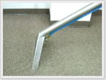特徴
- 高温・高圧の蒸気で洗浄します。
- 長所
- 使用洗剤は帯電防止効果と微生物を殺菌したり、防汚効果にすぐれており衛生的な床を保ちます。
- 使用機材
- ドライバキュ－ム・ポリシャ－（メタルブラシ使用）・スチ－ム洗浄機（エクストラクタ－）・起毛ブラシ
カ－ペットドライクリ－ニング（セミドライ方式）
- 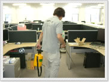特徴
- 綿や合成繊維で出来ているパットをポリシャ－に装着させ、バフする事によって汚れを取る方法です。
- 長所
- 微生物を殺菌し、汚れが分解しやすく衛生的な床を保ちます。又、作業時間が短く価格が抑えられます。
- 使用機材
- ドライバキュ－ム・ポリシャ－（ミラクルパット使用）・起毛ブラシ
クリスタルプロ・ドライシステム
- 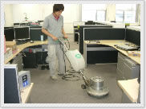特徴
- 環境に配慮した作業です。（汚水を残さず、洗浄後の湿気はありません。）
- 長所
- 薬剤の力により、汚れを結晶化し、ガンコな汚れを包み込み固めます。
- 使用機材
- ドライバキュ－ム・ポリシャ－（ミラクルパット使用）・乾燥して再度ドライバキュ－ム・起毛ブラシ
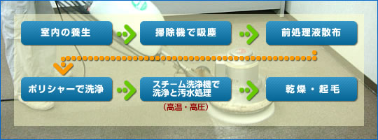
料金表
| スチーム方式 | セミドライ方式 | |
|---|---|---|
| 〜125㎡ | 28,000円 | 22,000円 |
| 126〜330㎡ | 300円/㎡ | 220円/㎡ |
| 331㎡〜 | 250円/㎡ | 180円/㎡ |
カーペット洗浄
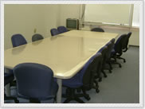 |
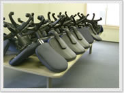 |
作業前 |
備品の片付け |
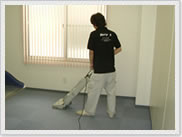 |
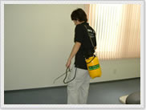 |
掃除機掛け |
前処理剤の噴霧 |
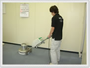 |
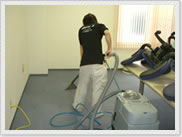 |
白ブラシでの洗浄 |
洗浄後の汚水回収 |
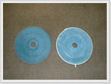 |
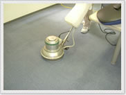 |
ヤーンパット |
ヤーンパットによる汚れ回収 |
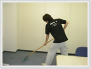 |
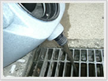 |
カーペットの目立て |
回収汚水 |